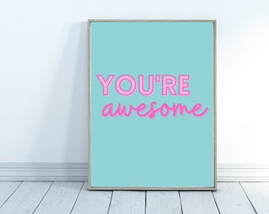

{% extends 'base.html'%}
{%import 'macros.html' as macro %}


{% block content%}
<h1 style="margin: top 35%;" class="text-center">60seconds of truth</h1>
<div class="container">
    <div class="row">
        <div class="col-md-6">

            {{macro.displayPitches(pitches)}}
            

        </div>
    </div>
</div>


<footer class="text-center"> 2021 Vivian Gichuki</footer>
{% endblock %}
